IV. Quatrième Pièce
1. Présentation générale de la pièce 4
Nom de la pièce : Pièce 4
Date de création : 07/06/2025
Échelle : 1/1
2. Caractéristiques techniques de la pièce 4
- Système d'unité : MMGS (millimètre, gramme, seconde).
- Décimale : 2 (toutes les dimensions doivent être exprimées avec deux chiffres après la virgule.)
- Tolérance : ± 5% (marge d'erreur).
- Matériaux et densité : Aluminium Alliage 1060 ; Densité : 0.0027 g/mm³.
- Remarque générale : Tous les trous sont débouchants sauf indication contraire.
3. Schéma graphique de la pièce 4
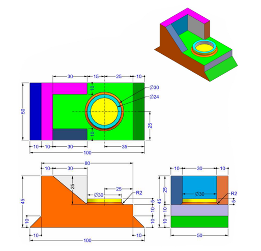
Nous avons les vues de Face, Gauche, Dessous et la vue isométrique selon notre analyse.
4. Processus de réalisation de la pièce 4
1ère Étape : Configuration des paramètres initiaux du dessin (système d'unité et matériaux)
Configuration du système d'unité
Suivez la même procédure que pour la Pièce 1 pour définir le système d'unité sur MMGS.
Mise en place du matériau
Suivez la même procédure que pour la Pièce 1 pour définir le matériau sur Aluminium Alliage 1060.
2ème Étape : Première extrusion
Réalisation de l'esquisse à extruder
Allez dans la barre d'outils et prenez la fonction "Ligne" pour dessiner la forme à extruder.
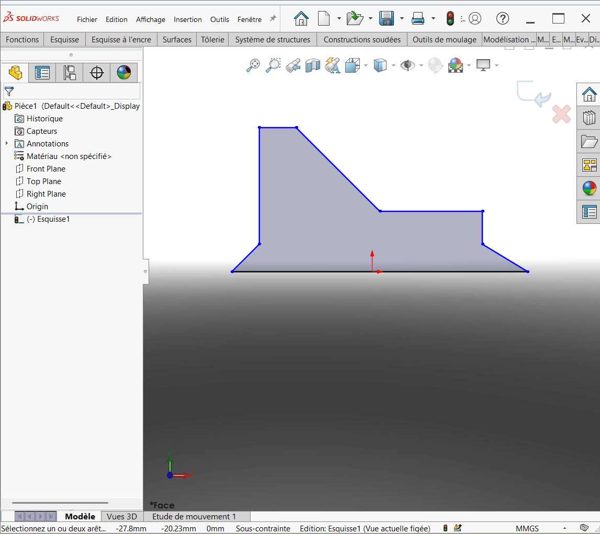
Après cela, prenez la fonction "Cote intelligente" dans la barre d'outils et faites la cotation de l'esquisse.
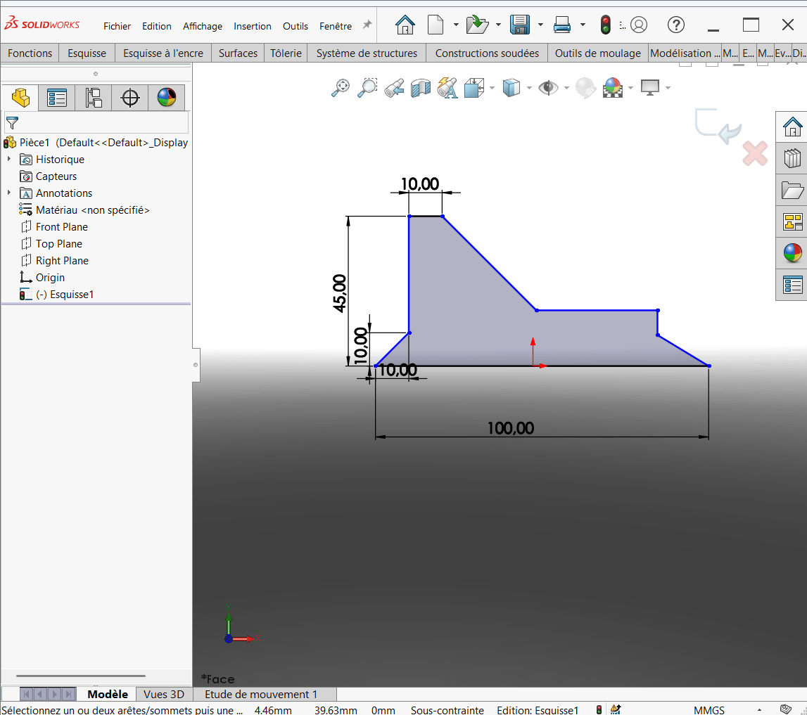
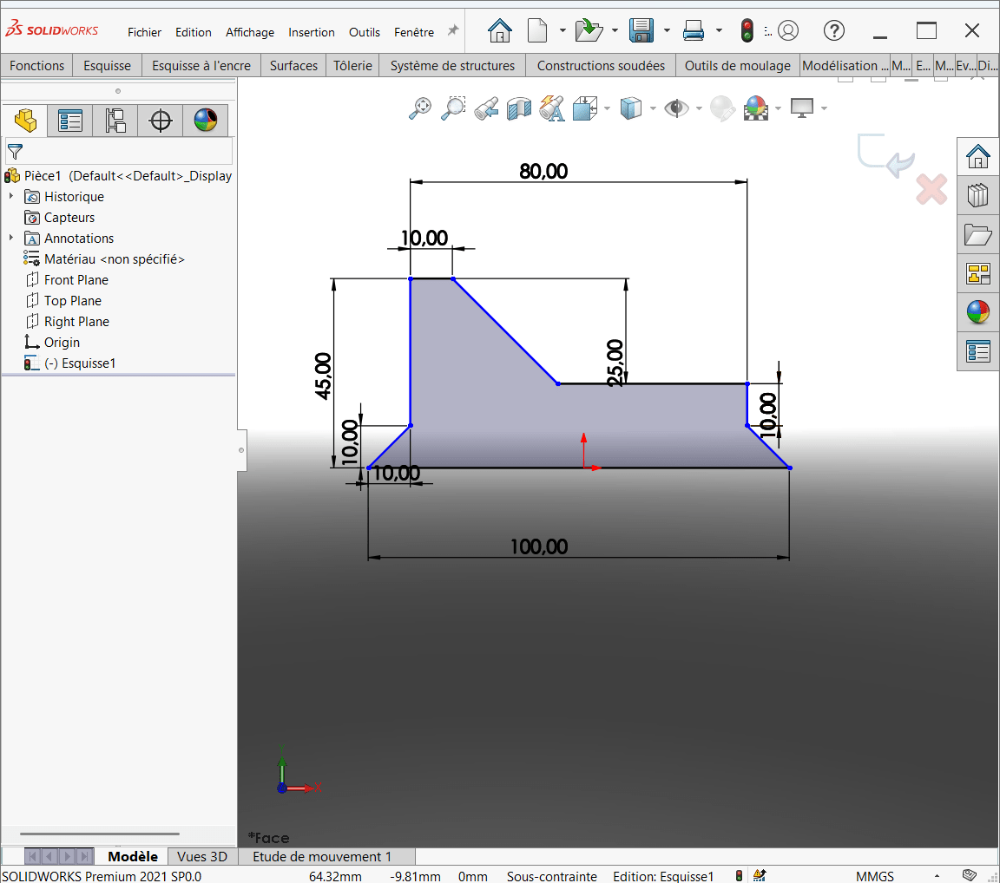
Extrusion de l'esquisse
Allez dans la barre d'outils, dans l'onglet "Fonctions" et prenez "Base/Bossage extrudé". Insérez la profondeur de l'extrusion à 100 mm.
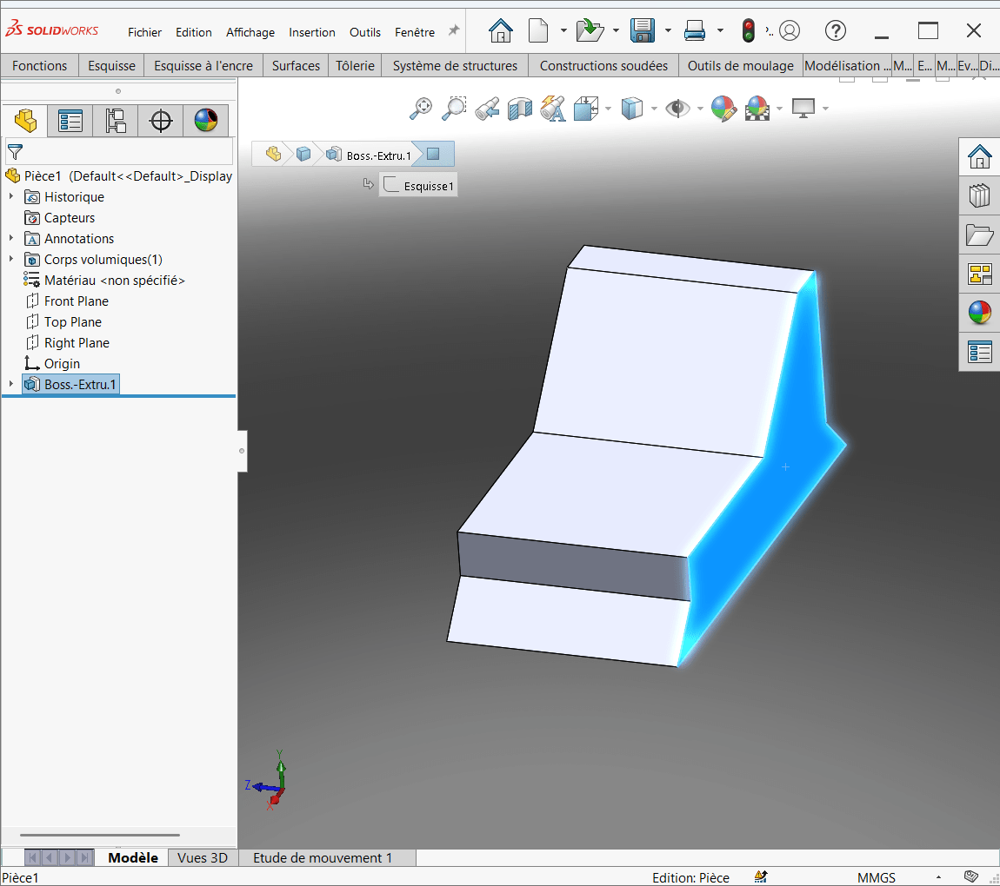
3ème Étape : Deuxième extrusion
Dessiner l'esquisse à extruder
Dessinez l'esquisse requise pour la deuxième extrusion sur la face en bleu.
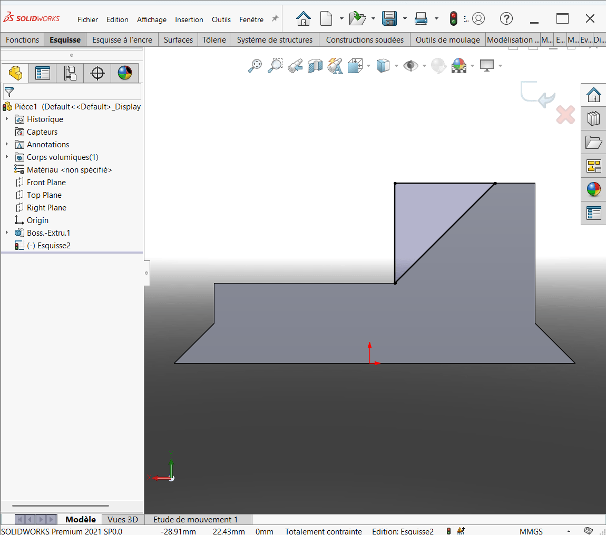
Extrusion de l'esquisse dessinée
Extrudez cette esquisse.
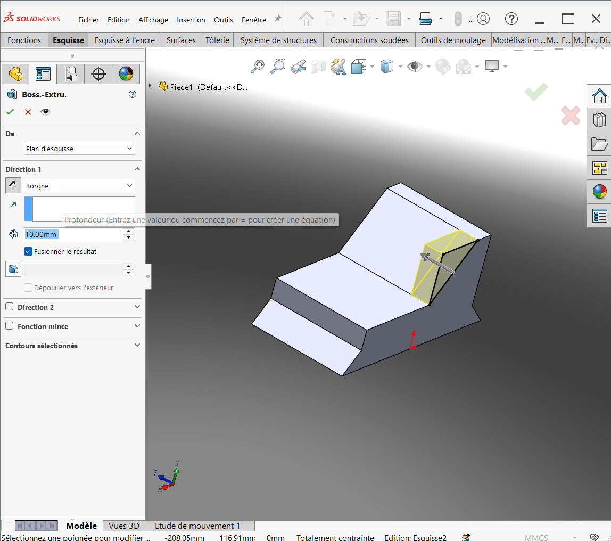
Après la validation, on aura :
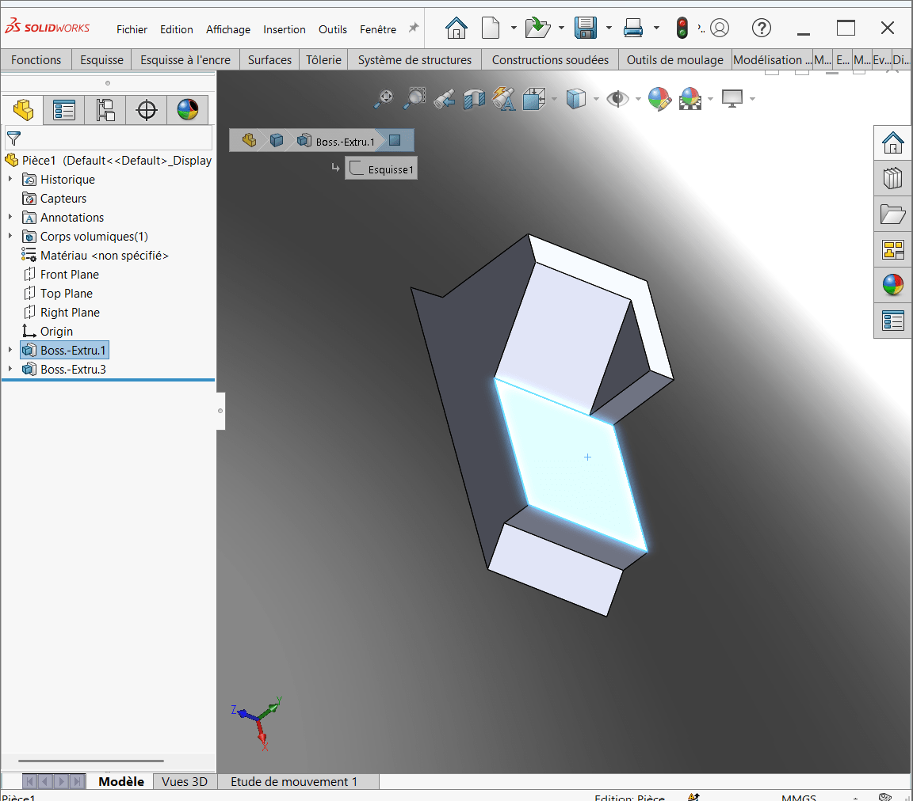
4ème Étape : Troisième extrusion
Tracer le cercle
Tracez un cercle sur la face désirée pour cette troisième extrusion.
Extrusion de l'esquisse dessinée
Appliquez la fonction d'extrusion sur ce cercle.
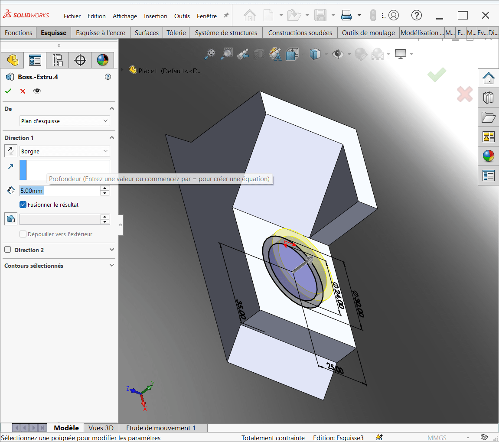
5ème Étape : Faire l'enlèvement de matière
Dessiner l'esquisse à extruder
Dessinez l'esquisse pour l'enlèvement de matière sur la face concernée.
Enlèvement de la matière
- Allez dans l'onglet Fonction.
- Cliquez sur "Enlèvement de matière par extrusion".
- Pour la profondeur, mettez "Jusqu'à la surface".
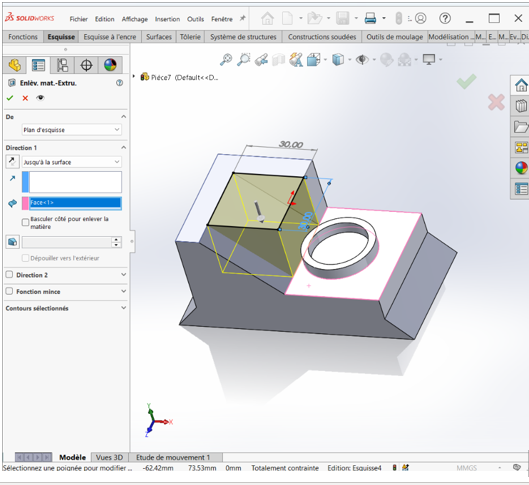
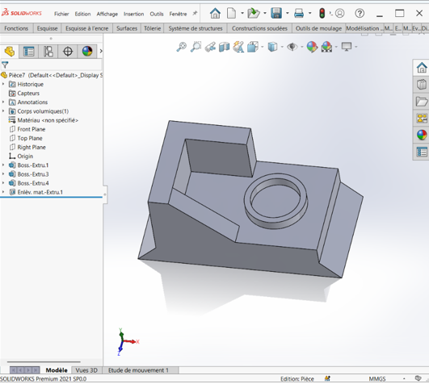
6ème Étape : Faire le congé
Appliquez la fonction de congé sur les arêtes spécifiées.
7ème Étape : Évaluation de la masse
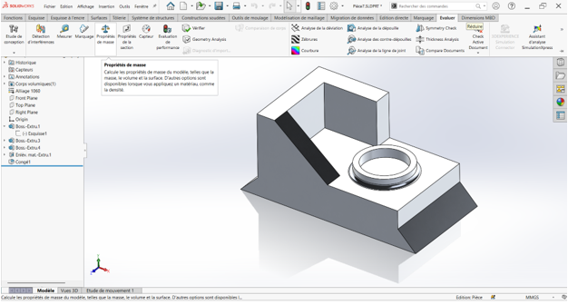
Suivez la même procédure que pour les pièces précédentes pour évaluer la masse.
Enfin, nous avons trouvé pour la masse de la Pièce 4 une masse de 297,29 g.